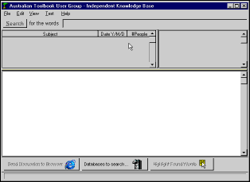

Toolbook Knowledge Nuggets - what is it?
Toolbook Knowledge Nuggets is a program which lets you read everything that's ever been said about authoring & programming Toolbook. It contains:
| Internet Usenet Discussion Forum (Listserv) 1994-1999 plus | |
| The official tech support Forum from Compuserve 1992-1996 which then became | |
| The internet based Asymetrix hosted public discussion newsgroup, 1997-1999. |

- "Toolbook Knowledge
Nuggets" at work looking up
a few words, and then later browsing freely.
Features
| Offline browsing of all Toolbook discussion groups (databases supplied) | |
| Fully indexed text searching | |
| As well as being able to search, you can simply browse archives and check out what people are talking about this, or any month. | |
| The central focus in the "Toolbook Knowledge Nugget Reader" is the 'discussion' viz. individual contributions to a subject under discussion are always combined into a single long article. It reads like a story. | |
| Edit the discussion text 'article' - then save as a HTML or Rich Text format for future reference. Print the edited document from your browser. Even add a graphic and send in the 'tip' / discussion to our online Tips Magazine. | |
| Sort your search hits by date, subject and by number of people contributing to a discussion. For example, you could sort the search results and find out what the longest discussions were all about. Some discussion have over 30 contributors! | |
| With a single click of a button, you can instantly view any discussion in your browser (Explorer or Netscape). The exported HTML file has hyperlinks and a table of contents at the top. | |
| You can search individual years e.g. just look in 1998 for everything to do with ActiveX - the discussion databases (available for download) are broken up by year. |
Can you afford not to have it?
The solution to all your technical Toolbook problems are probably in this knowledge base - it is huge. I call it 'independent' since it is not edited or put out by Asymetrix - it is the sum total of the questions people have asked and the replies they get (and don't get) in all the online Toolbook discussion forums. And it's in your hand, in on place - ready for action.
 |
If it saves you a few hours (or days!) of stuffing around - trying to solve some obscure Toolbook authoring problem - then it's worth it - wouldn't you say? |
 |
| Product | Description | Cost |
| Toolbook Knowledge Nugget Reader LITE | Searches all years. Displays the results of searches for all years. Limited to displaying the text of discussions occurring within the last year only. |
free |
| Toolbook Knowledge Nugget Reader PRO | No limitations |
free |
| Internet Usenet Discussion Forums (Listserv) | 1994 - Toolbook 1.53 classics 1995 - Toolbook 3 released 1996 - Toolbook 4 released 1997 - Toolbook II / 5 released 1998 - Toolbook II / 6 released 1999 - Toolbook II / 6.5 released ( Toolbook versions 3, 4, 5 and 6 are very similar e.g. Toolbook 6 only adds ActiveX support ) |
free |
| Compuserve Toolbook WINAPA forum | 1992-1996 | free |
| Asymetrix hosted public discussion newsgroup | 1997 1998 1999 |
free |
How to Get it
You can download the software plus the additional discussion archives, yourself.
The free LITE 'Toolbook Knowledge Nugget" reader software is capable of searching all databases covering all years. The LITE version is limited to displaying the text of discussions occurring within the last year only. The PRO version does not have this limitation. The PRO registration code is now available for free.
| Download the software + any archives you need. Run off your hard disk or burn your own CD | |
| Learn about Registering to immediately get a registration code to upgrade to the PRO reader software - the code is now available for free - get it here. | |